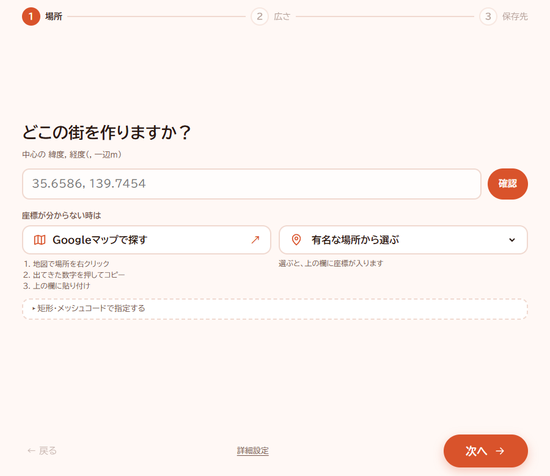
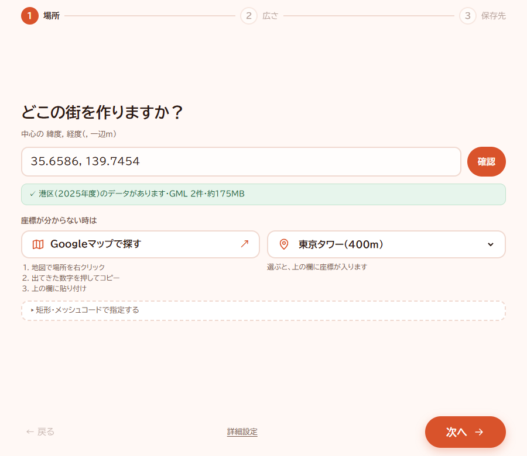
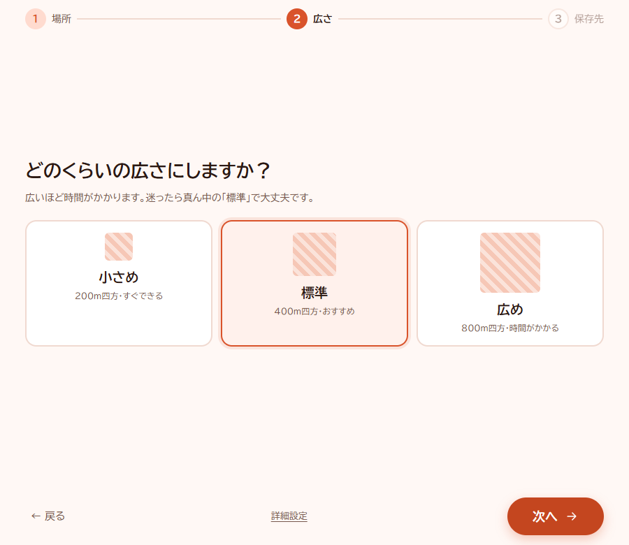
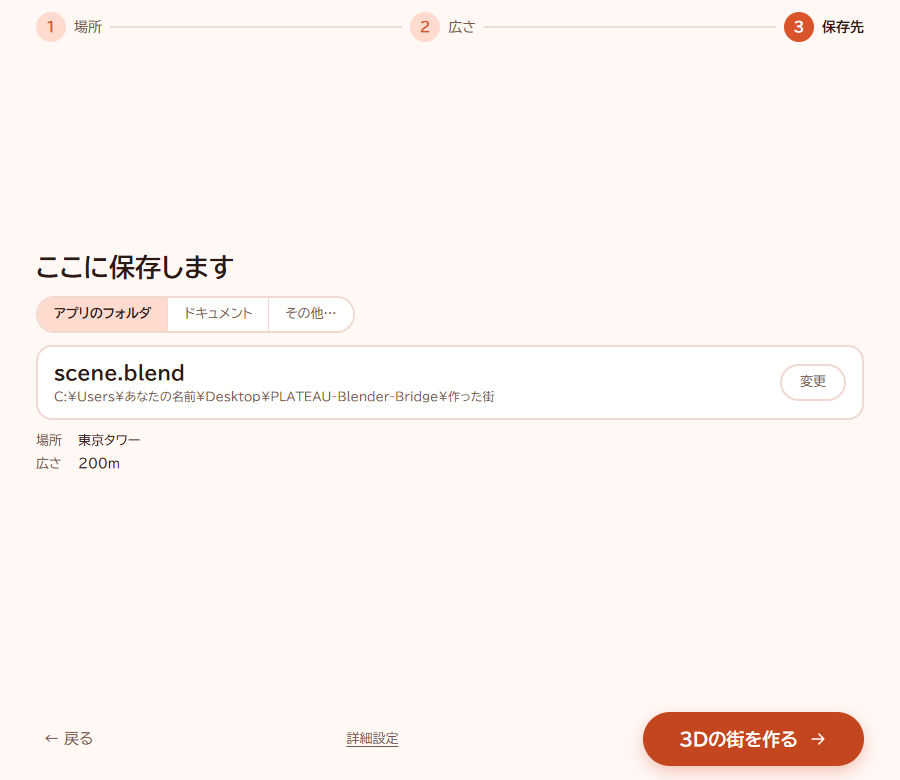
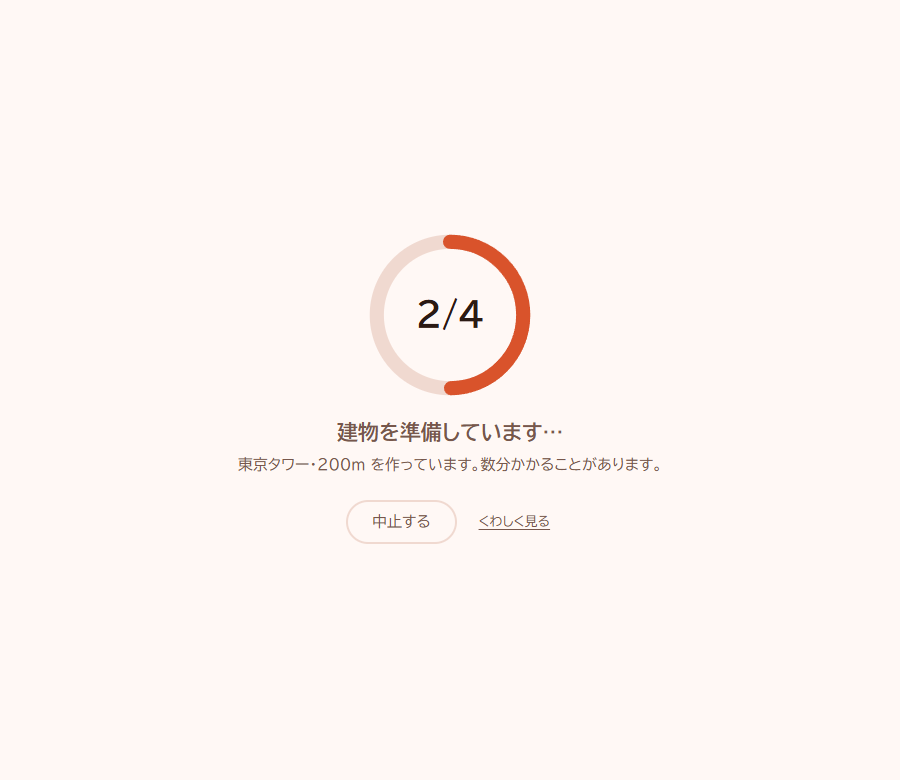
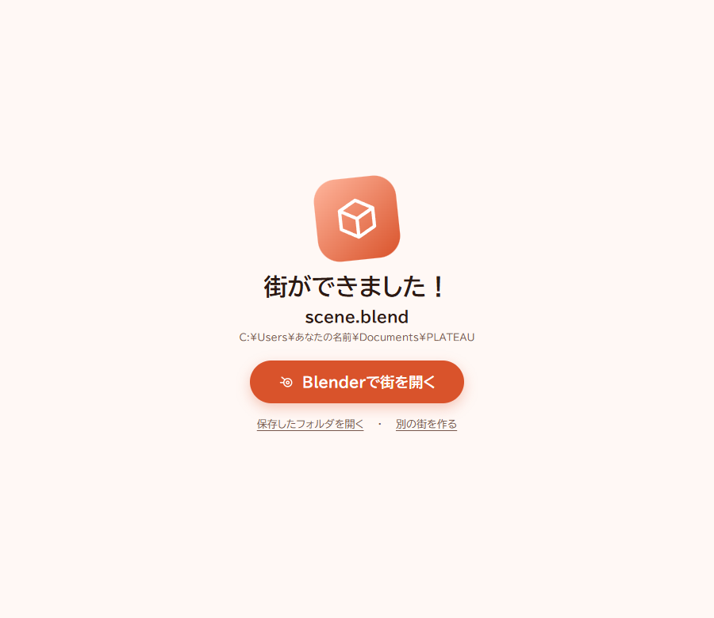
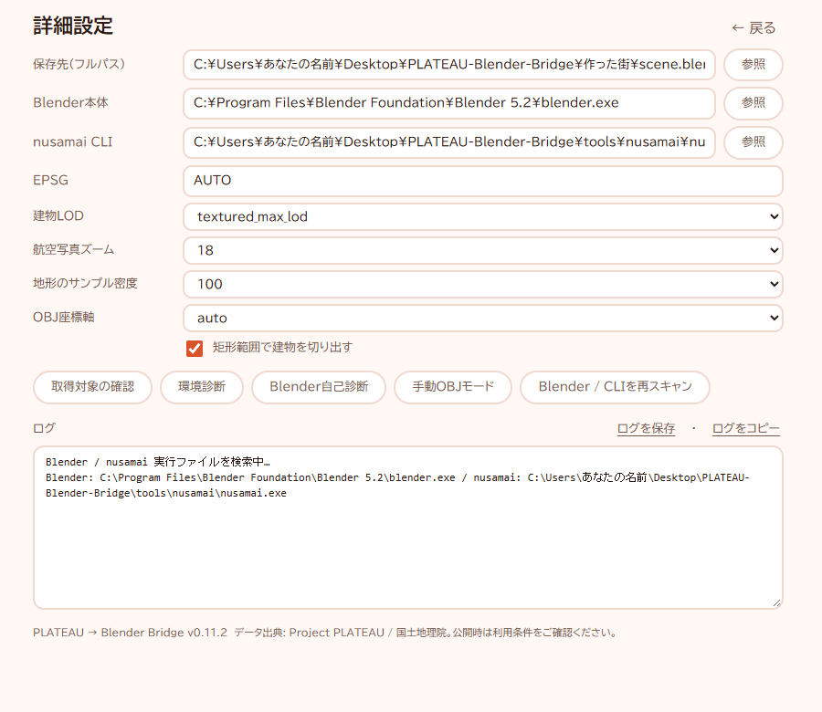

PLATEAU → Blender Bridge 使い方ガイド
場所を選ぶだけで、実在の街を Blender で開ける 3D データにする道具です。
1. これは何をする道具？
場所（緯度・経度）を入れると、次の2つのデータをインターネットから自動で集めて、Blender で開ける 3D の街（.blend ファイル）を作ります。
- 建物の形 …… 国土交通省「Project PLATEAU」の 3D 都市モデル
- 地面の写真と高さ …… 国土地理院の「地理院タイル」（航空写真・標高）
Python などのプログラムをインストールする必要はありません。
2. 用意するもの
| パソコン | Windows 10 / 11（64ビット） |
|---|---|
| ブラウザ | Microsoft Edge（Windows に最初から入っています。画面の表示に使います） |
| Blender | 無料の 3D ソフト。blender.org から入れます（Blender 5.2 で動作確認） |
| ネット接続 | データを集めるのに使います |
| 空き容量 | 200m 四方でも作業用に 200MB ほど。広い範囲ほど増えます |
3. 始め方
このフォルダは、デスクトップやドキュメントなど自分で書き込める場所に置いて使います。ログなどもこのフォルダの中の data に書くので、パソコンのほかの場所は汚しません。
（「Program Files」の中など書き込めない場所でも動きますが、その時はログが Windows の一時フォルダに、作った街が「ドキュメント\PLATEAU」に置かれます）
1exe をダブルクリック
このフォルダの PLATEAU-Blender-Bridge.exe をダブルクリックします。
2Windows の確認が出たら
初めて開く時、Windows が確認してくることがあります。配った人が分かっている ZIP なら、次のように進めてください。
- 「開いているファイル - セキュリティの警告」→「実行」
- 「Windows によって PC が保護されました」→「詳細情報」→「実行」
4. 使い方（3つの質問に答えるだけ）
質問1：どこの街を作りますか？

座標が分からない時は、次のどちらかを使います。
- 有名な場所から選ぶ …… 東京タワー、大阪城などを選ぶと、座標が入ります。
- Googleマップで探す …… 地図で場所を右クリック → いちばん上に出る数字（緯度, 経度）を押してコピー → 欄に貼り付け。

質問2：広さ

質問3：保存先

scene.blend として保存されます。「ドキュメント」や「その他…」で別の場所も選べます。「3Dの街を作る」を押すと作り始めます。


5. できあがったファイル
| scene.blend | 3D の街。Blender で開きます。航空写真も中に入っています。 |
|---|---|
| scene.provenance.json | 使ったデータの出典の記録。消さないでください。 |
| scene.work（フォルダ） | 作業用。容量が気になる時は消して大丈夫です（scene.blend はそのまま開けます）。 |
6. しくみ：中で何が起きているか
「3Dの街を作る」を押すと、この道具は次の4つの段階を順に行います。作成中の画面の「1/4」〜「4/4」がこれです。
| 1. データを探す | 入れた場所を含む PLATEAU のデータ（都市ごと・区画ごとに分かれています）を探します。 |
|---|---|
| 2. 建物を準備 | PLATEAU の建物は CityGML という、地図用の XML 形式で配られています。これを nusamai（同梱の変換ツール）で、3D ソフトが読める OBJ 形式に変換し、範囲の外の建物を切り落とします。 |
| 3. 地形と写真を準備 | 国土地理院の地理院タイルから、その範囲の航空写真と標高を集め、写真を貼った地面を作ります。 |
| 4. Blender で保存・確認 | Blender を裏で動かして建物と地面を置き、.blend に保存します。最後に、保存したファイルを開き直して、建物・地面・写真・座標がそろっているかを確かめます。 |
緯度・経度は地球の上の角度なので、そのままでは「メートル」で測れません。この道具は場所に合った平面直角座標系（日本を19の地域に分けた、メートル単位の座標）へ自動で変換してから組み立てています。詳細設定の「EPSG」がその座標系の番号で、「AUTO」のままなら自動で選びます。
詳細設定

7. 困った時
「好きな街を3Dにしよう」という見出しの、灰色の1枚の画面が開いた
新しい画面を開けなかった時の予備の画面です。そのまま使えますが、このフォルダの data → logs にある gui-fallback-（日付）.log を配った人に送ってください。
「この場所にはデータがありません」と出る
PLATEAU の建物データがまだ無い地域です。「有名な場所から選ぶ」か、別の場所を試してください。
Blender が見つからないと言われる
Blender をインストールしてから、「詳細設定」→「Blender / CLIを再スキャン」を押してください。別の場所に入れた時は、「Blender本体」の「参照」で blender.exe を選びます。
「作れませんでした」と出た
同じ画面の「ログを保存」で保存したファイルを、配った人に送ってください。「くわしく見る」を押すと、何が起きたかをその場で読めます。
8. 作った街を発表・配布する時（出典の書き方）
作った街や、その画像・動画を人に見せる時は、授業や社内で見せる時も含めて、データの出典を書いてください。建物と地形・写真で、出典は別々に書きます。
建物（PLATEAU の 3D 都市モデル）
3D 都市モデルの著作権は、それぞれの市区町村にあります。使った都市と年度を入れて書きます。例（○○と年度を差し替える）：
出典：「3D都市モデル（Project PLATEAU）○○区（2025年度）」（国土交通省）を加工して作成
- 使った都市名と年度は、
scene.provenance.jsonの"city"と"year"に記録されています（メモ帳で開けます）。 - 都市ごとに利用条件と出典の書き方が決められています。その都市のデータの配布ページで確かめ、指定があればそちらに合わせてください。PLATEAU サイトポリシー
地形と航空写真（国土地理院の地理院タイル）
出典：地理院タイル（全国最新写真（シームレス）、標高タイル）を加工して作成
- 利用条件：国土地理院コンテンツ利用規約
9. 片付け方
このフォルダを消すだけです。ログなども中の data にあるので、一緒に消えます。
保存先をそのままにしていた場合、作った街もこのフォルダの「作った街」に入っています。要る物は、消す前に別の場所へ移してください。
前の版（2026年11月5日までに配った物）を使ったことがある人は、%LOCALAPPDATA%\PLATEAU-Blender-Bridge が残っています。要らなければ消してください（エクスプローラーのアドレス欄にこの1行を貼り付けて Enter で開けます）。